漫画版
第十四話「水の跡が残った密室」
朝倉は隣の棚から別の箱を引き出した。
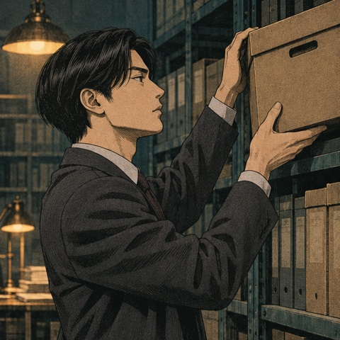
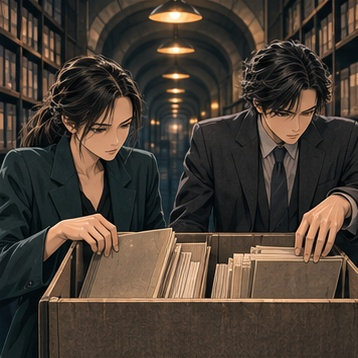
地下資料室・隣の箱
今度の配布版には金具が写ってます。でも、調書にある床の水は見えません。
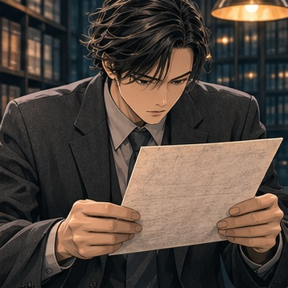
戸を開けたとき、床には水が残っていたそうです。
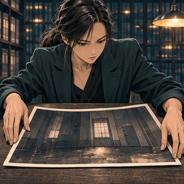
床の水は時間が経てば乾く。どの写真がいつ撮られたか確認しよう。
1 / 4
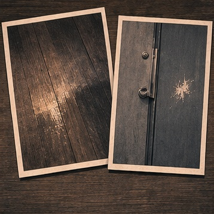
| 室内全景 | 暗い床の隅に水の跡 |
|---|---|
| 金具の拡大 | 受け金具の脇に細いこすれ跡 |
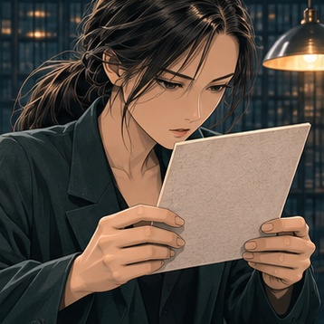
金具のアップだけだと、床が乾いていたかさえ分からないね。
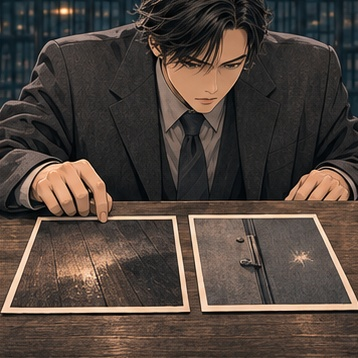
発見するまで、ずっと閉まっていたんでしょうか。
2 / 4
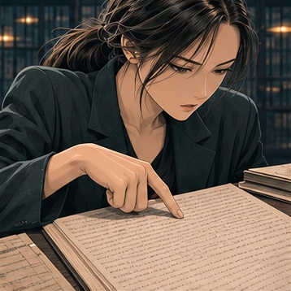
記録で分かるのは、発見時にかんぬきが掛かっていたことまで。
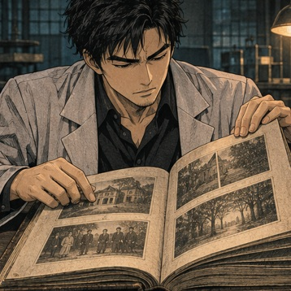
撮影順は床、次に金具。欄外にも撮影時のメモがある。
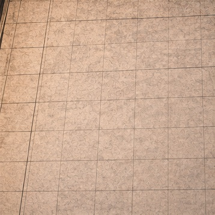
水が乾く前に床を撮影。
次に金具。
発見 → 水が乾く前に床を撮影 → 金具を撮影
3 / 4
元資料の二つの手掛かり
配布版に残ったのは金具
撮影一覧をたどると、水が残っていた時点に床と金具が一緒に写った全景が見つかった。
撮影順をたどり、水城は全景の入った封筒を開いた。
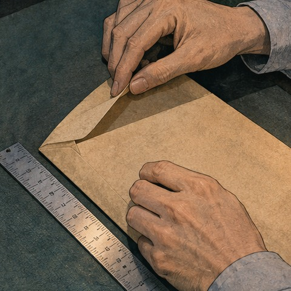
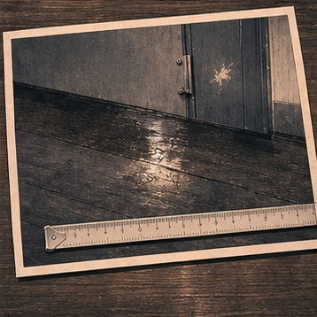
この全景だ。濡れた板二枚と、その上の金具が一枚に写ってる。
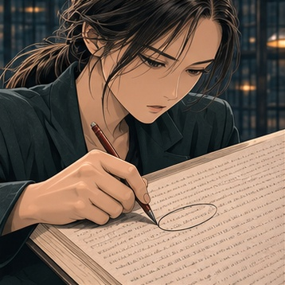
この一枚なら、濡れた床が戸のどこまで続いていたか読める。
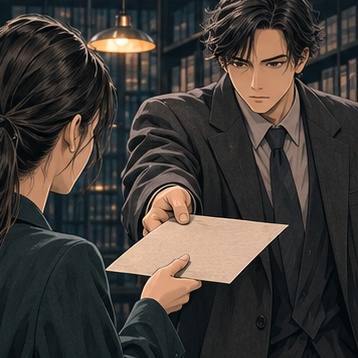
写真の番号に「乾く前」と添えます。後で見る人にも伝わるように。
4 / 4